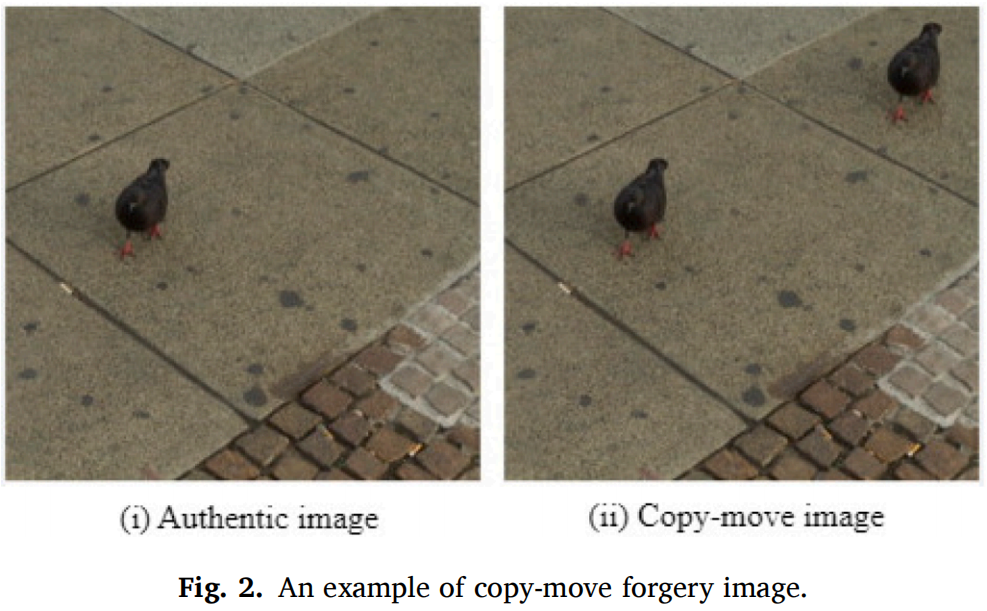
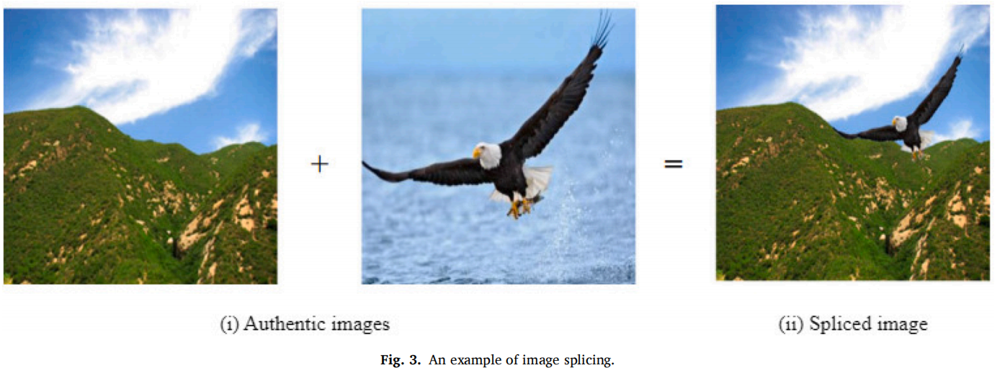
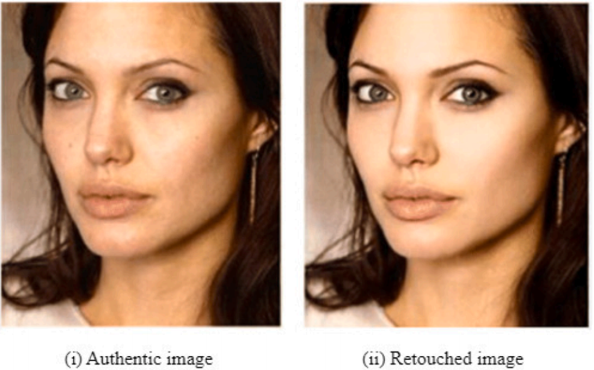
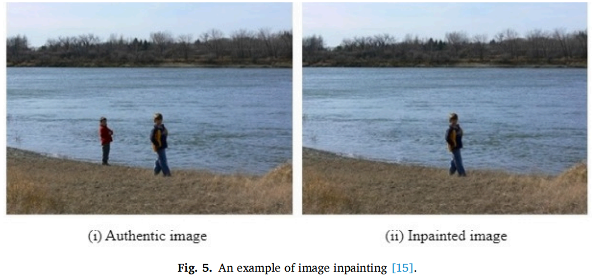
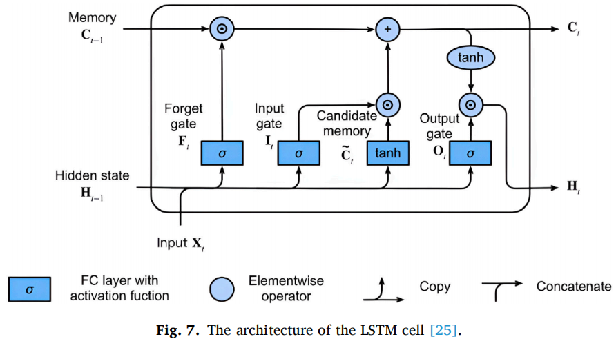

A survey on deep learning-based image forgery detection
A survey on deep learning-based image forgery detection
Fatemeh Zare Mehrjardi \(^a\) , Ali
Mohammad Latif \(^{*,a}\) , Mohsen
Sardari Zarchi \(^b\) , Razieh
Sheikhpour $^c $
a Computer Engineering Department, Yazd
University, Yazd, Iran
b Computer Engineering Department, Meybod
University, Meybod, Yazd, Iran
c Department of Computer
Engineering, Faculty of Engineering, Ardakan University, PO Box 184,
Ardakan, Iran
摘要
图像被称为人类之间的交流工具之一。随着相机和手机等数字设备的发展和普及，在任何地方拍照都变得容易。图像被用于许多医学、法医学和司法应用中。有时图像被用作证据，所以数字图像的真实性和可靠性越来越重要。有些人通过添加或删除图像的部分来操作图像，这使图像无效。因此，图像伪造的检测和定位是很重要的。图像编辑工具的发展使这个问题成为计算机视觉领域的一个重要问题。近年来，许多不同的算法来检测图像和像素级的伪造。这些算法主要分为传统方法和深度学习方法。深度学习方法是人工智能科学的重要分支之一。该方法由于具有自动识别和预测过程，以及对几何变换和后处理操作的鲁棒性，已成为大多数计算机视觉问题中最流行的方法之一。本文综合研究了图像伪造类型、基准数据集、伪造检测中的评价指标、传统伪造检测方法、发现传统方法的缺点和局限性、深度学习方法的伪造检测方法以及该方法的性能。根据深度学习方法的扩展及其在大多数计算机视觉问题上的成功表现，我们在本研究中的主要重点是基于深度学习方法的伪造检测。本调查有助于研究人员获得伪造检测领域的深层背景。
1.介绍
数字图像可以通过各种技术来伪造。现有的数字图像伪造检测技术大致可分为两大类：主动/非盲法和被动/盲法[6–8]。这些类别及其子类别如图1所示。
- 主动方法：在主动方法中，对图像进行预处理，并将信息嵌入到原始图像中。一些主动方法的例子包括数字水印和数字签名。这种方法需要特殊的软件、硬件和原始图像来输入信息或从图像中提取信息。如果没有这些要求，这种方法将是不可能的和无效的。此外，在这种方法中，如果先决条件是[9]的，伪造检测就很容易了。
- 被动方法：在被动方法中，即通常被称为盲法，不需要对图像进行预处理。被动方法检测图像是否伪造，并通过分析图像的内容和结构来发现不一致性。这种方法比主动方法更受青睐，因为不需要任何先验信息[9]。被动方法的一些例子包括复制移动伪造、图像拼接、图像润饰和物体去除。
1.1.被动处理方法的类型
本调查主要关注下面所描述的被动方法类型。
移动伪造是最简单、最常见的图像处理方法之一。这种类型的伪造包括复制图像的一个或多个部分，并将其粘贴到同一图像的其他位置。该方法的目的主要是隐藏一些重要的信息或在图像中插入一些错误的信息。由于被复制的部分属于同一图像，因此在结构和纹理上与整个图像是兼容的。
除了复制和粘贴之外，还可以对图像执行几何变换，如旋转、缩放和后处理操作，如模糊、改变亮度、压缩和添加噪声。这些转换和操作导致被操纵的区域不容易被人类的[10,11]识别。图2显示了一个复制移动伪造图像的例子。
 图像拼接是一种将两个或多个图像组合成一个图像的方法。在生成的图像中，在拼接的位置有边缘和模糊区域。使用图像编辑工具，这些区域可以与图像合并，使人类视觉不会检测到伪造的[6,12]。图3为一个图像拼接的例子。
 图像修饰是其他图像伪造方法中危害最小的伪造方法。该方法增强或减少了图像[13]上的像素特征。此外，它也是一种流行的照片编辑应用程序和杂志[2]的方法。这种方法通过增加或减少像素颜色等某些特征，使图像更具吸引力。图4显示了图像修饰的一个例子。
 对象删除被称为破坏性伪造，因为它可能会改变图像的语义内容。[14]有两类对象删除技术：复制-移动和图像插入绘画。复制移动通过从主图像或另一个图像复制一个区域并粘贴到被删除对象的区域来删除所需的对象。复制移动由于其简单性，被广泛用于对象删除。
图像中的绘制最初是为了恢复受损的信息和去除旧照片中的划痕。此方法通过用周围的像素填充对象的位置来删除对象。图像内画可以同时保持纹理和结构的一致性。图像插入图例如图5所示。

伪造检测是近十年来研究人员最有趣的课题之一。因此，许多研究主要分为两类：传统学习方法和深度学习方法。在[2,16]中可以找到关于这两种方法的一些优秀的综述。尽管在伪造检测领域有适当的综述文章，但我们的综述文章的目的是对两种伪造检测方法进行综合检查，以比较和发现它们的优缺点和挑战。另一方面，根据深度学习方法表现良好在大多数问题如果硬件条件和适当的数据集，我们文章的另一个重点是检查伪造检测深度学习从两个新的和不同的方面：使用不同的深度学习方法和不同的深度学习架构。
本文的其余部分分为以下几个部分：第2节给出了不同的深度学习架构和用于伪造检测的各种评估指标的简要背景。第3节解释了基准数据集在复制-移动、拼接和不绘制伪造检测方面的细节。第4节对传统的伪造检测方法及其细节进行了解释和比较。第5节对具有不同策略和深度学习架构的基于深度学习的伪造检测进行了全面的回顾。最后，在第6节中给出了所有伪造检测方法的结论、其缺点和优点、存在的挑战和未来的建议。
2.背景
目前，大多数伪造检测方法都是基于机器学习和深度学习的方法。本节概述了机器学习算法、深度学习架构和根据回顾的研究得出的评估指标。
2.1.机器学习
- 支持向量机（SVM）
- 决策树（DT）
- K-最近的邻居（KNN）
2.2.深度学习（DL）
2.2.1. CNN
- 卷积层
- 池化层
- 全连接层
2.2.2. RNN
递归神经网络，也称为重复神经网络，用于序列数据处理。这些网络有一个反馈层，在其中网络输出与下一个输入一起返回到网络。递归神经网络的内部记忆回忆起它之前的输入，并使用这个记忆来处理一系列的输入。递归神经网络具有短期的内部记忆，这与长期依赖性的梯度消失问题有关。因此，不同类型的递归神经网络被引入于长期依赖问题。长短期记忆（LSTM）网络是一种著名的递归神经网络，它试图模拟一个组件和它的前身[23,24]之间的长依赖关系。
LSTM是一种旨在解决消失梯度问题的RNN网络之一。它由四个组件组成，分别称为单元格、输入门、输出门和忘记门。该单元格是一个随时间的推移而存储和更新信息的地方。单元格内的值由三个门[24]进行更新。图7说明了LSTM的结构。
 LSTM网络的基本概念是单元及其相关门的状态；单元是一条高速公路，沿着信息链。这个单元格可以被认为是网络内存。盖茨以更新的状态保存信息。他们决定哪些信息进入单元格，并学习在网络训练[25]期间应该存储或忘记哪些信息。
2.2.3. 区域卷积神经网络（R-CNN，Regional convolutional neural network）
图像中的物体识别和定位是计算机视觉中最基本和最具挑战性的概念之一。Girshick等人[26]提出了一种名为R-CNN的目标识别和分割系统。该系统使用多层卷积计算区分特征，对图像区域进行分类，并在识别的对象周围划定边界。图8显示了R-CNN网络的步骤。
首先，在R-CNN网络中，使用选择性搜索算法识别出2000个区域。调整所有区域的大小，进入预先训练好的卷积神经网络，然后从区域中提取特征。接下来，使用这些特征向量和支持向量机分类器来识别包含对象的区域。最后，通过边界盒回归[26]来确定对象的边界。
2.2.4. Fast R-CNN
R-CNN网络对图像的2000个区域运行，使得速度非常慢。Girshick [27]，改进了R-CNN算法，使神经网络应用于整个图像一次。这个网络被称为快速R-CNN。图9显示了Fast R-CNN网络的结构。
如图9所示，首先将整个图像和一组目标建议给给Fast R-CNN网络作为输入。该网络对整个图像进行处理，并生成一个连续的特征图。接下来，使用感兴趣区域（ROI)池化层从每个对象提议的特征映射中提取一个固定长度的特征向量。每个特征向量进入完全连接的层序列。在网络的最后，有两个并行层：一个softmax层，指定每个对象的类，和一个线性回归层，输出四个值作为每个检测对象[28]的限制边界。
2.2.5. Faster R-CNN
Ren等人在2015年发布了Fast
R-CNN的改进版本[29]。该网络与RastR-CNN网络的主要区别是，RastR-CNN网络使用选择性搜索算法来创建感兴趣的区域，而更快的R-CNN网络使用区域建议网络（RPN）层来实现这个目的。特征映射给给RPN层，该层输出建议对象及其分数。
在RPN层中，一个滑块窗口将应用于特征映射。该窗口包含具有k个不同形状和大小的锚点的方框。锚点被放置在整个图像中。最后，该层将所提出的对象输出为具有不同大小和形状的盒子，并将它们发送到ROI层。ROI层将所提议的盒子转换为相同的大小，并从每个锚点中提取一个特征映射。最后，将特征映射给出到一个全连接的层，每个对象的类别由一个softmax层来确定。图10显示了更快的R-CNN网络的结构。
2.2.6. Mask R-CNN
2017年，Kaim等[30]人引入了一种名为MaskR-CCNN的新架构，这是一种更快的R-CNN的改进架构。在这个体系结构中，除了指定对象及其类的边界外，对象的像素还与每个边界中的其他像素分开。换句话说，在每个绑定中都会创建一个二进制掩码。这是通过在Faster R-CNN网络中添加一个新的分支来实现的，这样每个被ROI层检测到的边界都被给出给卷积层。然后，二值掩码指定对象像素的值为1，其他对象像素的值为零。图11显示了Mask R-CNN网络的结构。
2.2.7. You only look once (YOLO)
2.2.8. 单镜头探测器（SSD，Single shot detector）
2.2.9. 自编码器
2.2.10.生成对抗网络（GAN）
2.3.评价指标
评估指标是用于描述模型或算法在基准数据集上的性能的工具。伪造检测方法的评价基于图像伪造检测和像素伪造检测[35,36]两个层次。在第一种方法中，整个图像的标签应分为两类：伪造和健康，而在第二种方法中，像素的标签应分为这两类。
当研究人员使用没有地面真实图像的数据集时，计算图像级别的评估指标。由于缺乏地面真实图像，因此无法在像素级进行评估。使用混淆矩阵计算了两个级别的评估度量。混淆矩阵由四个组成部分组成。这些组件基于像素级别的定义如下：
- TP（真阳性）：伪造像素正确检测为伪造像素。
- FP（假阳性）：检测到错误的真实像素为伪造像素。
- FN（假阴性）：伪造的像素被错误地遗漏为伪造的像素。
- TN（真阴性）：正确检测到的真实像素为真实像素。
注：对于图像级别，这些组件是图像。在下面，一些基于像素级别的标准评估指标，如准确率（Acc）、召回率(R)、精度(P)、F1评分、假阳性率（FPR）和使用混淆矩阵的组成部分定义IoU [9,35]。
3.基准数据集
3.1. MICC
3.2. CoMoFod
3.3. CASIA
3.4. COVERAGE
3.5. Inpainting datasets
4.传统的伪造检测方法
传统的复制移动伪造检测（CMFD）方法主要可以分为两类：基于块的方法和基于关键点的方法。这些方法包括伪造检测的三个连续步骤：特征提取、特征匹配和伪造定位[9,58]。
图16显示了两种传统的CMFD方法[59]的步骤。对每个步骤的描述如下所示。
预处理步骤：一些伪造检测算法的第一步是预处理。在这个步骤中，执行一些操作，如将彩色图像转换为灰度、调整图像大小、降噪和转换为其他颜色空间等，即执行[59]。
两种伪造检测方法：
基于块的方法：在基于块的方法中，将图像分为重叠或不重叠的矩形或圆形块。在特征提取步骤中，采用不同的方法从离散余弦变换（DCT）系数、主成分分析（PCA）、奇异值分解（SVD）、定向梯度直方图（HOG）、Hu矩、局部二值模式（LBP）、泽尼克矩、极复指数变换（PCET）[60–63]等所有块中提取特征向量。
在特征匹配步骤中，采用排序、相关和欧氏距离的方法来适应相似的特征向量。在伪造定位步骤中，计算了匹配对之间的几何变换。这个计算有助于消除任何不匹配的对。随机样本共识（RANSAC）被广泛应用于仿射同调性的准确估计。它导致了最小的误差，并过滤了一些不匹配的对[9,64]。基于块的方法的缺点是计算复杂度高，对一些几何变换[65]的性能较差（图17）。
基于关键点的方法：在基于关键点的方法中，整个图像不需要被分割成块。该方法在特征提取步骤中使用角和边，每个属性由一个描述符表示。关键点的提取使用了各种算法，如尺度不变特征变换（SIFT）[67]，加速鲁棒特征（SURF）[68]，以及不分割图像的加速分段测试（FAST）[69]中的特征。
在特征匹配步骤中，采用了聚类、欧氏距离和最近邻域等不同的方法。如果关键点匹配，则将检测到伪造文件。在伪造定位步骤中，类似于基于块的方法中的此步骤，计算匹配对之间的几何变换，并消除任何不匹配对。与基于块的方法相比，该方法的计算量较少，且对几何变换具有鲁棒性。然而，在均匀区域的伪造检测中，识别相似的图像为伪造图像，以及根据关键点是该方法[6,70,71]存在的问题（图18）。
后处理：在基于块和关键点的方法中，伪造的位置可能不能被准确地本地化。为此，在后处理步骤中，使用了诸如侵蚀和分层等形态学操作来寻找伪造的[71]的确切位置。
传统的伪造检测方法也有一些局限性。这些方法包括三个步骤，每个步骤都是单独完成的，并且有许多参数，必须手动调整这些参数。这些方法大多是在具有高性能的特定数据集上进行的调优，但它们不适用于其他数据集[9]。
下面，我们回顾了一些基于块、基于关键点和混合方法的研究。这些审查的结果将在下一小节中给出。图19概述了传统的伪造检测方法和对每种方法进行的研究。
4.1.基于块的伪造检测的一些研究概述
4.2.基于关键点的伪造检测的研究概述
| Year | Summary | Dataset | Performance | Metrics |
|---|---|---|---|---|
| 2020 [89] | 预处理：将RGB图像转换为灰度图像，并对灰度图像应用DWT算法。 特征提取：在2级DWT上的SURF+很活跃。 特征匹配：2个NN+DBSCAN。 后处理： RANSAC。 |
CoMoFod, MICC-F220, MICCF2000 |
优点：该方法对几何变换和后处理操作具有鲁棒性。它可以检测到多个伪造物。该方法采用DBSCAN聚类来减少搜索空间，减少错误匹配，并降低计算成本。 缺点：该方法的性能较差，在锻造区域中缩放、平滑、亮度变化过多。 |
R=91.24%, P=95.98%, FPR=9.82%, TPR=96.68% |
| 2020 [81] | 特征提取：SIFT。 特征匹配：反转G2NN。 后处理：使用两种类似的措施，如HAC和j-链接，消除不匹配。 |
GRIP, FAU | 优点：该方法使用聚类算法降低了时间复杂度。它在简单伪造、几何变换伪造和小规模后处理伪造等方面都具有鲁棒性。 缺点：该方法不稳定，对大规模伪造区影响较差。 |
R=99.67%, P=99.79%, F1=99.72% |
| 2020 [91] | 特征提取：
SURF+旋转局部二进制模式（RLBP）。 特征匹配：G2NN+欧氏距离，层次聚类。 后处理：RANSAC |
COVERAGE | 优点：该方法对几何变换、模糊和JPEG压缩具有鲁棒性。 | ACC=70.5% |
| 2021 [83] | 预处理：将对比限自适应直方图均衡（CLAHE）算法应用于RGB图像，提高平滑区域的特征检测。 特征提取：SIFT。 特征匹配： FANN，DBSCAN集群， 后处理：使用RANSAC和GORE删除异常值 |
MICC-F220 | 优点：它对几何变换、模糊、压缩和添加噪声具有鲁棒性。它可以处理具有最少的错误匹配的多个复制移动伪造。 | TPR=100%, FPR=3.63%, F1=97.56% |
| 2022 [94] | 特征提取：分别使用SIFT从原始图像和缩放图像中提取关键点并进行合并。 特征匹配：通过比较从关键点中获得的筛选描述符和作为第二个关键点匹配的处理关键点集来检测类似的关键点。 后处理：采用双自适应滤波法进行去除，采用凸包查找法进行伪造定位 |
CoMoFod, MICC-F220, CASIA, COVERAGE |
优点：该方法使用第二个关键点匹配来匹配更多的SIFT关键点，并检测单个和多个CMFD。双自适应过滤可以更能自适应地去除错误的关键点匹配，并更精确地定位伪造区域。 | R=94.5%, P=86.7%, F1=90.4% |
4.3.基于块和基于关键点的伪造检测方法的研究综述
表6给出了混合伪造检测研究的总结
| Year | Summary | Dataset | Performance | Metrics |
|---|---|---|---|---|
| 2020 [97] | 预处理：将图像分割成正方形的方块。 特征提取：SIFT+冲浪。 特征匹配：具有倒数空间距离的凝聚式层次聚类方法。 后处理： RANSAC。 |
MICC-F220 | 优点：该方法对几何变换具有良好的鲁棒性。结合SIFT和SURF算法，对平滑图像和小伪造区域具有良好的性能 | R=92.5%, FPR=8.9%, F1=91.7% |
5.具有深度学习的伪造检测
近年来，深度学习方法已经在计算机视觉中被考虑，如伪造检测。深度学习方法可以自动从数据中提取层次特征。该方法学习了丰富的语义表示，避免了手工特征开发。深度学习方法的最大问题是训练过程[104]需要大量的数据。随后，我们提出了一些解决这个问题的解决方案。
5.1.深度学习中的训练方法
通过对深度学习网络进行伪造检测的研究，我们发现有两种流行的方法： 1)端到端网络和2)预训练网络。在第一种方法中，从输入层到最终层的所有层参数都与一个大数据集一起进行训练。在第二种方法中，由于在大多数问题中缺乏合适的数据集，因此在新问题中使用具有大数据集的预训练网络作为起点或特征提取部分。图20提供了这两种方法及其子分支的概述。
接下来，将描述这些子分支。
5.1.1.从头开始训练
开始这种方法需要大量的数据和时间来训练网络。它在控制架构和参数方面很重要，并将创建更有效的网络。由于在一些计算机视觉研究中没有大型数据集，使用这种方法几乎是不切实际和效率低效的。Ansari等人[105]使用较小的VGGNet和MobileNet V2.0来检测图像级别的复制移动伪造。他们使用MICC-F2000和CASIA V2.0数据集和增强技术来训练网络。在另一个例子[106]中，VGG16网络被用于检测拼接伪造。使用了CASIA v2.0数据集和训练网络的图像补丁。
5.1.2.迁移学习
第二种方法是迁移学习。该方法以某一任务的预先训练模型为起点，在新任务[104]中使用少量的训练样本对模型的参数进行轻微的再训练。这些预先训练好的模型如AlexNet、VGGNet、谷歌lenet、ResNet都是用ImageNet等大型训练数据集进行训练的，具有良好的泛化能力。迁移学习的优点是节省了训练时间，而且不需要大量的数据。深度学习体系结构试图检测初始层中的边和角，中间层中的形状，以及最终层[107]中的任务的具体特征。在迁移学习中，使用预训练网络的初始层和中间层来处理新问题，负责识别边缘和形状，并根据期望的问题和数据集进行调整。
利用迁移学习方法检测了复制-移动和拼接方法中的伪造图像。例如，在[108]中，在CASIA
v2.0数据集上使用了三个预先训练的模型，VGG16、VGG19和ResNet152。评价结果表明，初始层的特征对伪造图像的检测是有用的。在另一个例子中，迁移学习方法也被用于检测插入绘制方法[109]中的伪造像素。为此目的，首先，对图像应用了一个高通滤波器来突出显示伪造区域。接下来，将图像提供给预先训练过的CNN和ResNet网络的四个初始层。最后，放置一个上采样层，并显示一个包含伪造像素的二进制图像。
5.1.3.使用预先训练好的模型作为特征提取器
预先训练好的模型可以作为特征提取器，从新的样本中提取出有意义的特征。可以在预先训练的模型上添加新的分类器对特征图进行分类。或者，这些特征图可以作为特征向量，机器学习算法可以用来对它们进行分类。在这种方法中，不需要对整个模型进行重新训练。基本层已经包含了对于对不同任务进行分类通常有用的特性。该方法可用复制移动和拼接方法检测图像[110]和像素[111]级的伪造。
预先训练过的网络，如AlexNet
[112]、VGGNet [113]、ResNet [114,115]和盗梦空间v3.0
[116]已经被用来获取特征向量。然后，可以使用不同的机器学习算法，如SVM、KNN、决策树、朴素贝叶斯和浅层网络进行分类。在某些情况下，使用决策融合技术[114]来对这些特征向量进行分类。一些研究人员使用基于块的方法和深度学习方法[110]相结合，或将人工特征与从深度学习[115]中获得的特征相结合来检测伪造。
例如，在[117]中，使用不同的预训练模型如VGG16、MobileNet和概念v3作为特征提取器，研究不同的机器学习算法如KNN、决策树、朴素贝叶斯和随机森林作为分类器，用于复制移动伪造检测。在另一个例子[114]中，使用从预先训练好的ResNet中提取的特征向量和使用KNN、SVM和朴素贝叶斯分类器的决策融合方法进行拼接伪造检测。在另一个例子[115]中，使用DWT和LBP算法结合手工特征，并从ResNet模型中提取特征向量。然后利用浅层网络对这些组合特征进行分类，并检测拼接图像。接下来，表7总结了使用这种方法进行的几个伪造检测研究。
5.2.使用不同的深度学习架构进行伪造检测
在本节中，我们全面回顾了用于伪造检测中的各种深度学习架构。图21显示了用于伪造检测的五种著名架构。
在下面，我们对在每个架构中进行的一些研究进行了回顾，这些调查的结果将在下面的小节中给出。
5.2.1.利用卷积神经网络进行伪造检测
5.2.2.利用目标检测网络进行伪造检测
5.2.3.基于自动编码器网络的伪造检测
5.2.4.基于生成式对抗网络的伪造检测
5.2.5.基于递归神经网络的伪造检测
5.3.讨论
对伪造检测的研究分为图像伪造检测和像素伪造检测两个层次。第3节中描述的所有数据集都用于图像伪造检测研究，并且只使用具有地面真实值的数据集，如CoMoFod、MICC-F600、GRIP、NIST16等。由于几何变换和后处理操作的多样性，CoMoFod是一个用于在可用的复制移动伪造数据集中评估复制移动伪造检测方法的合适数据集。
所有的深度学习架构都用于图像伪造检测级别。然而，具有迁移学习技术的卷积神经网络几乎总是用于图像伪造检测。在像素伪造检测的研究中，经常采用对象检测网络和自动编码器网络。这些网络使用具有地面真实值的数据集来训练和预测二值掩模。由于需要大量的数据进行训练，缺乏合适的伪造数据集，以及健康图像和伪造图像的不平衡，生成对抗网络通常被用作单类分类方法。这些网络通常只用健康的数据进行训练，将伪造的图像或补丁识别为不一致的图像。递归神经网络通常与其他网络一起使用来检测像素或补丁之间的不一致性。根据上述主题，我们回顾了2019-2023年的图像伪造检测研究，并将其分为三组。图33-35显示了这三组人。
6.结论
本文在整个图像和像素水平上，使用基于块、基于关键点和深度学习的方法，研究了不同的伪造方法、伪造数据集和伪造检测方法。研究表明，基于块的方法的计算时间和复杂度较高，且在一些几何变换和后处理中表现较差。基于关键点的方法对几何变换具有更强的鲁棒性。由于缺乏足够的关键点，该方法对小伪造区域的检测效果较差。基于块和基于关键点的方法在预处理、特征提取、特征匹配、发现相似区域和后处理等方面都有不同的步骤。这些步骤的参数必须单独调整，以检测伪造。与前两种方法不同的是，深度学习在不同架构的训练过程中自动执行伪造检测过程。伪造检测的深度学习最重要的问题是缺乏合适的数据集和长时间的训练。为了解决这个问题，研究人员在大数据集上使用了预先训练过的网络和迁移学习技术。
本研究回顾了各种伪造检测方法，并帮助研究人员熟悉新的想法和挑战。伪造检测是一个非常具有挑战性的问题，它仍然是一个开放的研究课题。在平滑和小区域中的伪造检测、使用几何变换和各种后处理操作的伪造检测，构建合适的伪造数据集，多重伪造检测，使用传统和深度学习方法的组合进行伪造检测，以及在各种伪造数据集上推广伪造检测方法，都是伪造检测领域仍需研究的案例。例如，根据研究，已经提出了许多方法来分别检测所有的伪造类型。每种方法都有其参数和设置，并已在特定的伪造品和数据集上进行了评估。因此，当伪造或数据集类型改变时，所提出的方法失去了有效性。有一些方法可以同时检测所有类型的伪造品。在未来的工作中，结合深度学习方法、基于块的方法、基于关键点的方法和边缘检测等不一致检测算法，可以同时识别所有类型的伪造。
另一方面，没有一个合适的数据集，其中包含足够的图像，包括各种伪造、几何变换和后处理操作。因此，每种方法都关注于一个特定的伪造和数据集。在未来的工作中，可以使用生成对抗网络来生成合适的数据集，包括所有类型的伪造、几何变换、后处理操作和用于像素伪造检测的地面真实掩模。
检测非常小的伪造区域和利用几何变换检测伪造是该领域的其他问题。在未来的工作中，可以使用不同的图像增强算法，如调整图像的直方图，结合几种关键点提取算法来增加关键点。为了解决过度几何变换的伪造检测问题，可以结合使用几种不同的深度学习架构、目标检测网络或更抗几何变换的胶囊网架构。